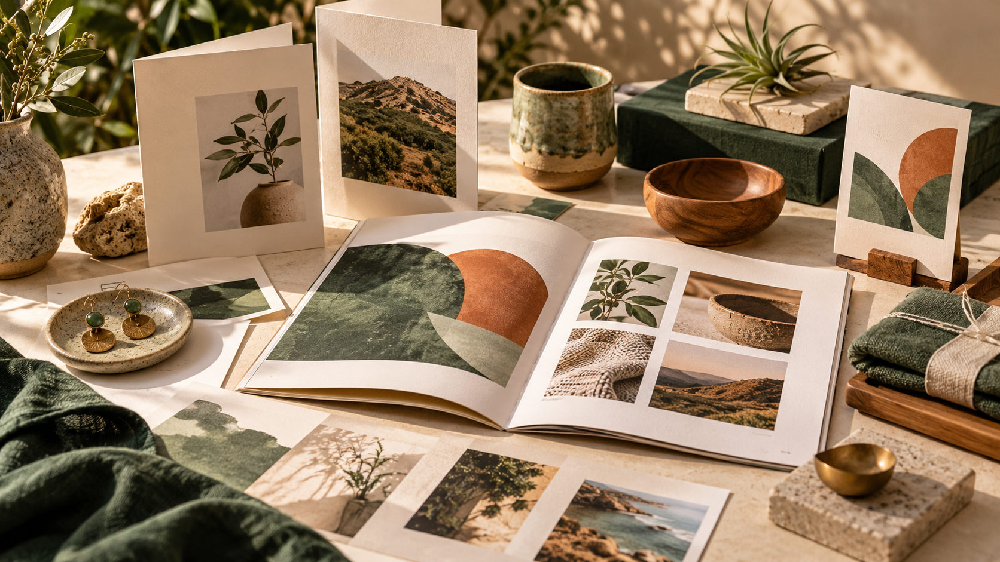
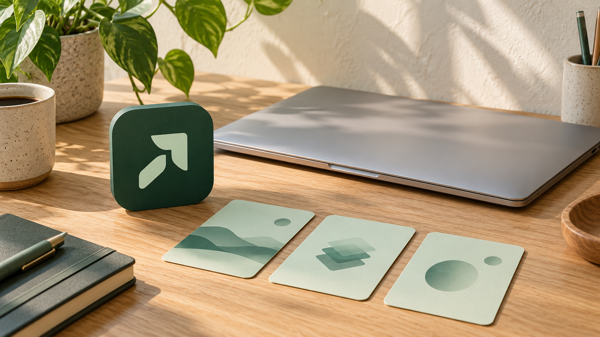
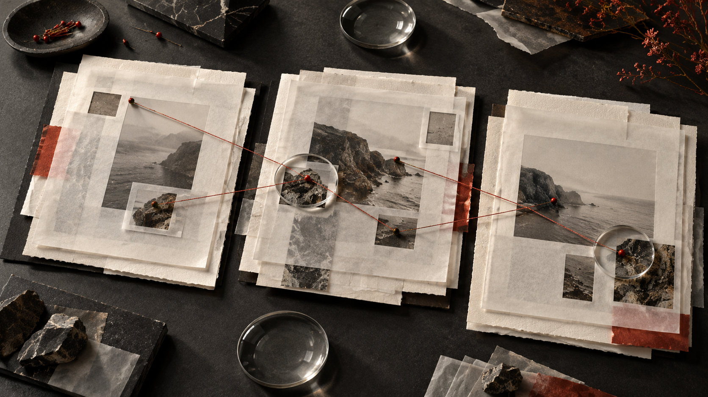
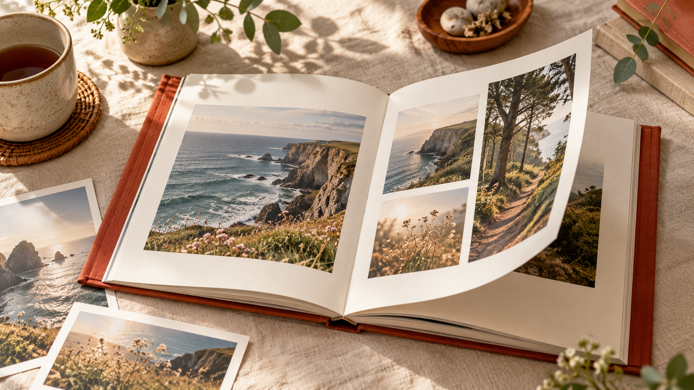
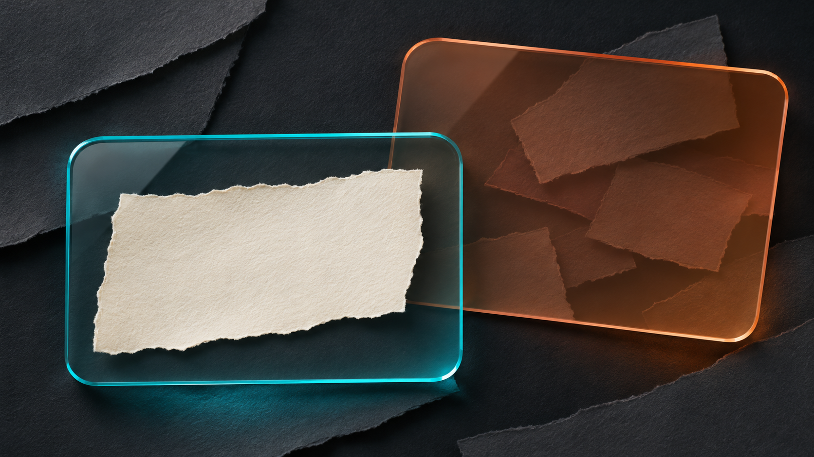
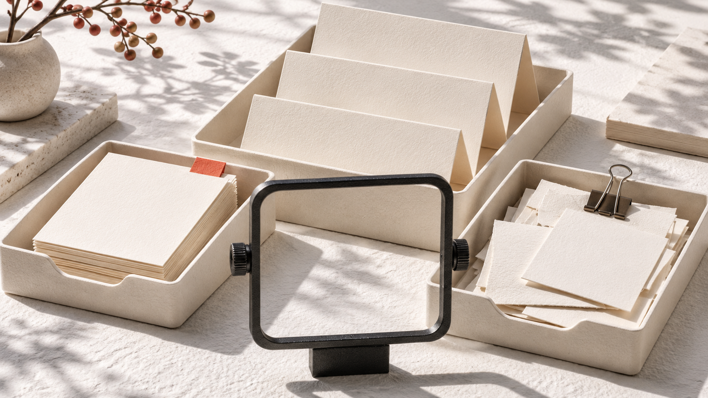

A Mini Builder.
👨｜👧
更多小产品，更多可能
11 个作品





Chrome 扩展 · 本地优先 · 可选 AI
CapMind · 事项助手
圈选网页内容，归入待办、追踪或杂项；让每日动作有提醒，让长周期事项有回访。
暂无公开入口
没有找到符合条件的作品，试试其他关键词或分类。
✳保持好奇。
持续创造。Will Lee / SMALL PRODUCTS
持续创造。Will Lee / SMALL PRODUCTS